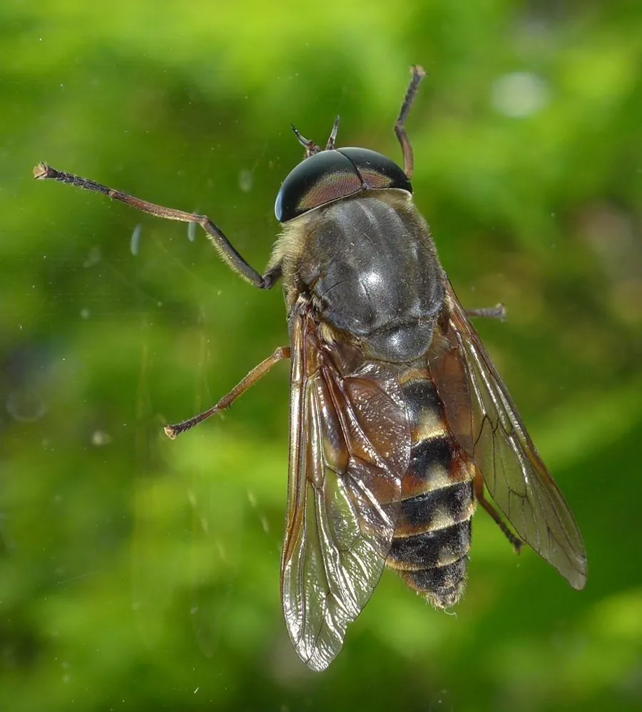

昆虫 · 动物界
牛虻 Tabanus bovinus

体型粗壮、复眼发达的大型吸血蝇类，雌虻叮咬牲畜和人类，传播疾病，是牧场和户外常见的害虫。
- 分类
- 门节肢动物门纲昆虫纲目双翅目科虻科属虻属
- 栖息环境
- 牧场、林缘、湿地和牲畜活动区
- 地理分布
- 欧洲、亚洲和北非，中国各地均有分布
- 保护级别
- 暂无评估；畜牧害虫
物种志
牛虻成虫体长约 1.5–2.5 cm，体粗壮，头部大，复眼发达，雄虻复眼相接，雌虻复眼分离；体色灰褐或黑褐，腹部有斑纹，翅透明，足粗壮。雌虻口器为刺舐式，能刺破皮肤吸血。
它生活在牧场、林缘、湿地和牲畜活动区，雄虻吸食花蜜，雌虻需要吸血来促进卵发育，会叮咬牛、马等牲畜和人类，叮咬时疼痛明显，还可能传播炭疽、锥虫病等疾病。牛虻飞行力强，能追踪移动的牲畜，是牧场的常见害虫，也影响户外活动和旅游。防治以畜体喷洒驱虫剂、诱捕器、清理孳生地为主，野外活动时穿长袖长裤并涂抹驱虫剂可减少叮咬，被叮咬后注意清洁伤口。
形态与习性
- 食性雄虻吸食花蜜；雌虻吸血
- 体长约 1.5–2.5 cm
- 识别体粗壮、复眼大，雌虻复眼分离
- 危害叮咬牲畜和人类，可传播炭疽等疾病
- 防护穿长袖长裤、涂抹驱虫剂，被叮咬后清洁伤口
趣味知识
- 只有雌虻吸血，雄虻只喝花蜜。
- 牛虻叮咬疼痛明显，是牧场里最让牲畜烦躁的害虫之一。
- 在牧场和湿地活动时穿长袖衣裤，可以减少被牛虻叮咬。